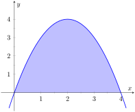
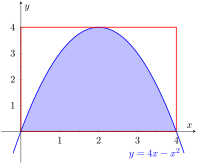
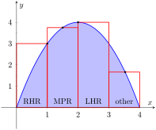
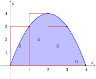
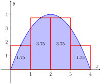
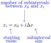
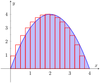
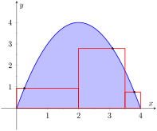
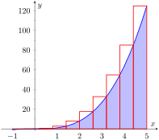

In the previous section we defined the definite integral of a function on \([a,b]\) to be the signed area between the curve and the \(x\)-axis. Some areas were simple to compute; we ended the section with a region whose area was not simple to compute. In this section we develop a technique to find such areas.
A fundamental calculus technique is to first answer a given problem with an approximation, then refine that approximation to make it better, then use limits in the refining process to find the exact answer. That is what we will do here.
Consider the region given in Figure 5.3.2, which is the area under \(y=4x-x^2\) on \([0,4]\text{.}\) What is the signed area of this region — i.e., what is \(\int_0^4(4x-x^2)\, dx\text{?}\)

Figure5.3.2.A graph of \(f(x) = 4x-x^2\text{.}\) What is the area of the shaded region?
We start by approximating. We can surround the region with a rectangle with height and width of 4 and find the area is approximately 16 square units. This is obviously an over-approximation; we are including area in the rectangle that is not under the parabola.

Figure5.3.3.Approximating area under a curve with one rectangle
We have an approximation of the area, using one rectangle. How can we refine our approximation to make it better? The key to this section is this answer: use more rectangles.
Let's use four rectangles with an equal width of 1. This partitions the interval \([0,4]\) into 4 subintervals, \([0,1]\text{,}\)\([1,2]\text{,}\)\([2,3]\) and \([3,4]\text{.}\) On each subinterval we will draw a rectangle.
There are three common ways to determine the height of these rectangles: the Left Hand Rule, the Right Hand Rule, and the Midpoint Rule. The Left Hand Rule says to evaluate the function at the left-hand endpoint of the subinterval and make the rectangle that height. In Figure 5.3.4, the rectangle drawn on the interval \([2,3]\) has height determined by the Left Hand Rule; it has a height of \(f(2)\text{.}\) (The rectangle is labeled “LHR.”)

Figure5.3.4.Approximating \(\int_0^4(4x-x^2)\, dx\) using rectangles. The heights of the rectangles are determined using different rules.
The Right Hand Rule says the opposite: on each subinterval, evaluate the function at the right endpoint and make the rectangle that height. In the figure, the rectangle drawn on \([0,1]\) is drawn using \(f(1)\) as its height; this rectangle is labeled “RHR.”.
The Midpoint Rule says that on each subinterval, evaluate the function at the midpoint and make the rectangle that height. The rectangle drawn on \([1,2]\) was made using the Midpoint Rule, with a height of \(f(1.5)\text{.}\) That rectangle is labeled “MPR.”
These are the three most common rules for determining the heights of approximating rectangles, but one is not forced to use one of these three methods. The rectangle on \([3,4]\) has a height of approximately \(f(3.53)\text{,}\) very close to the Midpoint Rule. It was chosen so that the area of the rectangle is exactly the area of the region under \(f\) on \([3,4]\text{.}\) (Later you'll be able to figure how to do this, too.)
The following example will approximate the value of \(\int_0^4 (4x-x^2)\, dx\) using these rules.
Example5.3.5.Using the Left Hand, Right Hand and Midpoint Rules.
Approximate the value of \(\int_0^4 (4x-x^2)\, dx\) using the Left Hand Rule, the Right Hand Rule, and the Midpoint Rule, using 4 equally spaced subintervals.
We break the interval \([0,4]\) into four subintervals as before. In Figure 5.3.6.(a) we see 4 rectangles drawn on \(f(x) = 4x-x^2\) using the Left Hand Rule. (The areas of the rectangles are given in each figure.)
Note how in the first subinterval, \([0,1]\text{,}\) the rectangle has height \(f(0)=0\text{.}\) We add up the areas of each rectangle (height× width) for our Left Hand Rule approximation:
Figure 5.3.6.(b) shows 4 rectangles drawn under \(f\) using the Right Hand Rule; note how the \([3,4]\) subinterval has a rectangle of height 0.
In this example, these rectangles seem to be the mirror image of those found in Figure 5.3.6.(a). This is because of the symmetry of our shaded region. Our approximation gives the same answer as before, though calculated a different way:
Our three methods provide two approximations of \(\int_0^4(4x-x^2)\, dx\text{:}\) 10 and 11.
(a)using the Left Hand Rule
(b)using the Right Hand Rule
(c)using the Midpoint Rule
Figure5.3.6.Approximating \(\int_0^4(4x-x^2)\, dx\) in Example 5.3.5
Subsection5.3.1Summation Notation
It is hard to tell at this moment which is a better approximation: 10 or 11? We can continue to refine our approximation by using more rectangles. The notation can become unwieldy, though, as we add up longer and longer lists of numbers. We introduce summation notation to ameliorate this problem.
Figure5.3.7.Explaining summation notation
Suppose we wish to add up a list of numbers \(a_1\text{,}\)\(a_2\text{,}\)\(a_3\text{,}\) …, \(a_9\text{.}\) Instead of writing
we use summation notation and write \(\sum_{i=1}^9 a_i\text{.}\) The upper case sigma, \(Sigma\) represents the term “sum”. The index (counter) of summation in this example is \(i\text{;}\) any symbol can be used. By convention, the index takes on only the integer values between (and including) the lower and upper bounds. To the right of \(\Sigma\text{,}\) the expression \(a_i\) is called the summand. It tells us what we are summing. This is summarized in Equation (5.3.1).
\begin{equation}
\sum_{\underbrace{i=1}_{i \text{-index of summation}}}^{\overbrace{9}^\text{upper bound}} \underbrace{a_i}_\text{summand}\tag{5.3.1}
\end{equation}
Let's practice using this notation.
Example5.3.8.Using summation notation.
Let the numbers \(\{a_i\}\) be defined as \(a_i = 2i-1\) for integers \(i\text{,}\) where \(i\geq 1\text{.}\) So \(a_1 = 1\text{,}\)\(a_2 = 3\text{,}\)\(a_3 = 5\text{,}\) etc. (The output is the positive odd integers). Evaluate the following summations:
It might seem odd to stress a new, concise way of writing summations only to write each term out as we add them up. It is. The following theorem gives some of the properties of summations that allow us to work with them without writing individual terms. Examples will follow.
Theorem5.3.9.Properties of Summations.
\(\ds \sum_{i=1}^n c = c\cdot n\text{,}\) where \(c\) is a constant.
We obtained the same answer without writing out all six terms. When dealing with small sizes of \(n\text{,}\) it may be faster to write the terms out by hand. However, Theorem 5.3.9 is incredibly important when dealing with large sums as we'll soon see.
Subsection5.3.2Riemann Sums
Consider again \(\int_0^4(4x-x^2)\, dx\text{.}\) We will approximate this definite integral using 16 equally spaced subintervals and the Right Hand Rule in Example 5.3.13. Before doing so, it will pay to do some careful preparation.
Figure5.3.12.Dividing \([0,4]\) into 16 equally spaced subintervals
Figure 5.3.12 shows a number line of \([0,4]\) divided, or partitioned, into 16 equally spaced subintervals. We denote \(0\) as \(x_0\text{;}\) we have marked the values of \(x_4\text{,}\)\(x_8\text{,}\)\(x_{12}\) and \(x_{16}\text{.}\) We could mark them all, but the figure would get crowded. While it is easy to figure that \(x_{9} = 2.25\text{,}\) in general, we want a method of determining the value of \(x_i\) without consulting the figure. Consider:

So \(x_{9} = x_0 + 9(4/16) = 2.25\text{.}\)
If we had partitioned \([0,4]\) into 100 equally spaced subintervals, each subinterval would have length \(\Delta x=4/100 = 0.04\text{.}\) We could compute \(x_{31}\) as
(That was far faster than creating a sketch first.)
Given any subdivision of \([0,4]\text{,}\) the first subinterval is \([x_0,x_1]\text{;}\) the second is \([x_1,x_2]\text{;}\) the \(i\)th subinterval is \([x_{i-1},x_{i}]\text{.}\)
When using the Left Hand Rule, the height of the \(i\)th rectangle will be \(f(x_{i-1})\text{.}\)
When using the Right Hand Rule, the height of the \(i\)th rectangle will be \(f(x_{i})\text{.}\)
When using the Midpoint Rule, the height of the \(i\)th rectangle will be \(\ds f\left(\frac{x_{i-1}+x_{i}}2\right)\text{.}\)
Thus approximating \(\int_0^4(4x-x^2)\, dx\) with 16 equally spaced subintervals can be expressed as follows, where \(\Delta x = 4/16 = 1/4\text{:}\)
We use these formulas in the next two examples. The following example lets us practice using the Right Hand Rule and the summation formulas introduced in Theorem 5.3.9.
Example5.3.13.Approximating definite integrals using sums.
Approximate \(\int_0^4(4x-x^2)\, dx\) using the Right Hand Rule and summation formulas with 16 and 1000 equally spaced intervals.
We were able to sum up the areas of 16 rectangles with very little computation. In Figure 5.3.14 the function and the 16 rectangles are graphed. While some rectangles over-approximate the area, other under-approximate the area (by about the same amount). Thus our approximate area of 10.625 is likely a fairly good approximation.
Notice Equation (5.3.2); by replacing 16 by 1,000 (and appropriately changing the value of \(\Delta x\)), we can use that equation to sum up 1000 rectangles!

Figure5.3.14.Approximating \(\int_0^4(4x-x^2)\, dx\) with the Right Hand Rule and 16 evenly spaced subintervals
We do so here, skipping from the original summand to the equivalent of Equation (5.3.2) to save space. Note that \(\Delta x = 4/1000 = 0.004\text{.}\)
Before the above example, we stated what the summations for the Left Hand, Right Hand and Midpoint Rules looked like. Each had the same basic structure, which was:
each rectangle has the same width, which we referred to as \(\Delta x\text{,}\) and
each rectangle's height is determined by evaluating \(f\) at a particular point in each subinterval. For instance, the Left Hand Rule states that each rectangle's height is determined by evaluating \(f\) at the left hand endpoint of the subinterval the rectangle lives on.
One could partition an interval \([a,b]\) with subintervals that do not have the same size. We refer to the length of the \(i\)th subinterval as \(\Delta x_i\text{.}\) Also, one could determine each rectangle's height by evaluating \(f\) at any point \(c_i\) in the \(i\)th subinterval. Thus the height of the \(i\)th subinterval would be \(f(c_i)\text{,}\) and the area of the \(i\)th rectangle would be \(f(c_i)\Delta x_i\text{.}\) These ideas are formally defined below.
Definition5.3.15.Partition.
A partition \(\Delta x\) of a closed interval \([a,b]\) is a set of numbers \(x_0\text{,}\)\(x_1\text{,}\)\(\ldots\)\(x_{n}\) where
The length of the \(i\)th subinterval, \([x_{i-1},x_{i}]\text{,}\) is \(\Delta x_i = x_{i}-x_{i-1}\text{.}\) If \([a,b]\) is partitioned into subintervals of equal length, we let \(\Delta x\) represent the length of each subinterval.
The size of the partition, denoted \(\norm{\Delta x}\text{,}\) is the length of the largest subinterval of the partition.
Summations of rectangles with area \(f(c_i)\Delta x_i\) are named after mathematician Georg Friedrich Bernhard Riemann, as given in the following definition.
Definition5.3.17.Riemann Sum.
Let \(f\) be defined on a closed interval \([a,b]\text{,}\) let \(\Delta x\) be a partition of \([a,b]\) as given in Definition 5.3.15, and let \(c_i\) denote any value in the \(i\)th subinterval.
Figure 5.3.19 shows the approximating rectangles of a Riemann sum of \(\int_0^4(4x-x^2)\, dx\text{.}\) While the rectangles in this example do not approximate well the shaded area, they demonstrate that the subinterval widths may vary and the heights of the rectangles can be determined without following a particular rule.

Figure5.3.19.An example of a general Riemann sum to approximate \(\int_0^4(4x-x^2)\, dx\)
“Usually” Riemann sums are calculated using one of the three methods we have introduced. The uniformity of construction makes computations easier. Before working another example, let's summarize some of what we have learned in a convenient way.
\begin{equation*}
\Delta x = \frac{3 - (-2)}{10} = 1/2 \text{ and } x_i = (-2) + (1/2)(i) = i/2-2\text{.}
\end{equation*}
As we are using the Midpoint Rule, we will also need \(x_{i-1}\) and \(\ds \frac{x_{i-1}+x_{i}}2\text{.}\) Since \(x_i = i/2-2\text{,}\)\(x_{i-1} = (i-1)/2 - 2 = i/2 -5/2\text{.}\) This gives
Figure5.3.22.Approximating \(\int_{-2}^3 (5x+2)\, dx\) using the Midpoint Rule and 10 evenly spaced subintervals in Example 5.3.21
Note the graph of \(f(x) = 5x+2\) in Figure 5.3.22. The regions whose area is computed by the definite integral are triangles, meaning we can find the exact answer without summation techniques. We find that the exact answer is indeed 22.5. One of the strengths of the Midpoint Rule is that often each rectangle includes area that should not be counted, but misses other area that should. When the partition size is small, these two amounts are about equal and these errors almost “cancel each other out.” In this example, since our function is a line, these errors are exactly equal and they do cancel each other out, giving us the exact answer.
Note too that when the function is negative, the rectangles have a “negative” height. When we compute the area of the rectangle, we use \(f(c_i)\Delta x\text{;}\) when \(f\) is negative, the area is counted as negative.
Notice in the previous example that while we used 10 equally spaced intervals, the number “10” didn't play a big role in the calculations until the very end. Mathematicians love to abstract ideas; let's approximate the area of another region using \(n\) subintervals, where we do not specify a value of \(n\) until the very end.
Example5.3.23.Approximating definite integrals with a formula, using sums.
Revisit \(\int_0^4(4x-x^2)\, dx\) yet again. Approximate this definite integral using the Right Hand Rule with \(n\) equally spaced subintervals.
Using Key Idea 5.3.20, we know \(\Delta x = \frac{4-0}{n} = 4/n\text{.}\) We also find \(x_i = 0 + i\Delta x = 4i/n\text{.}\)
We construct the Right Hand Rule Riemann sum as follows. Be sure to follow each step carefully. If you get stuck, and do not understand how one line proceeds to the next, you may skip to the result and consider how this result is used. You should come back, though, and work through each step for full understanding.
The result is an amazing, easy to use formula. To approximate the definite integral with 10 equally spaced subintervals and the Right Hand Rule, set \(n=10\) and compute
Recall how earlier we approximated the definite integral with 4 subintervals; with \(n=4\text{,}\) the formula gives 10, our answer as before.
It is now easy to approximate the integral with 1,000,000 subintervals! Hand-held calculators will round off the answer a bit prematurely giving an answer of \(10.66666667\text{.}\) (The actual answer is \(10.666666666656\text{.}\))
We now take an important leap. Up to this point, our mathematics has been limited to geometry and algebra (finding areas and manipulating expressions). Now we apply calculus. For any finite\(n\text{,}\) we know that
Both common sense and high-level mathematics tell us that as \(n\) gets large, the approximation gets better. In fact, if we take the limit as \(n\rightarrow \infty\text{,}\) we get the exact area described by \(\int_0^4 (4x-x^2)\, dx\text{.}\) That is,
This is a fantastic result. By considering \(n\) equally-spaced subintervals, we obtained a formula for an approximation of the definite integral that involved our variable \(n\text{.}\) As \(n\) grows large — without bound — the error shrinks to zero and we obtain the exact area.
This section started with a fundamental calculus technique: make an approximation, refine the approximation to make it better, then use limits in the refining process to get an exact answer. That is precisely what we just did.
Let's practice this again.
Example5.3.24.Approximating definite integrals with a formula, using sums.
Find a formula that approximates \(\int_{-1}^5 x^3\, dx\) using the Right Hand Rule and \(n\) equally spaced subintervals, then take the limit as \(n\to\infty\) to find the exact area.
Following Key Idea 5.3.20, we have \(\Delta x = \frac{5-(-1)}{n} = 6/n\text{.}\) We have \(x_i = (-1) + i\Delta x\text{,}\) which is the right endpoint of the \(i\)th subinterval.
The Riemann sum corresponding to the Right Hand Rule is (followed by simplifications):
Once again, we have found a compact formula for approximating the definite integral with \(n\) equally spaced subintervals and the Right Hand Rule. Using 10 subintervals, we have an approximation of \(195.96\) (these rectangles are shown in Figure 5.3.25). Using \(n=100\) gives an approximation of \(159.802\text{.}\)

Figure5.3.25.Approximating \(\int_{-1}^5 x^3\, dx\) using the Right Hand Rule and 10 evenly spaced subintervals
We have used limits to evaluate given definite integrals. Will this always work? It can be shown, given not-very-restrictive conditions, that yes, it will always work — this is the content of Theorem 5.3.26 below.
The previous two examples demonstrated how an expression such as
\begin{equation*}
\sum_{i=1}^n f(x_{i})\Delta x
\end{equation*}
can be rewritten as an expression explicitly involving \(n\text{,}\) such as \(32/3(1-1/n^2)\text{.}\)
Viewed in this manner, we can think of the summation as a function of \(n\text{.}\) An \(n\) value is given (where \(n\) is a positive integer), and the sum of areas of \(n\) equally spaced rectangles is returned, using the Left Hand, Right Hand, or Midpoint Rules.
Given a definite integral \(\int_a^b f(x)\, dx\text{,}\) let:
\(\ds S_L(n) = \sum_{i=1}^n f(x_{i-1})\Delta x\text{,}\) the sum of equally spaced rectangles formed using the Left Hand Rule,
\(\ds S_R(n) = \sum_{i=1}^n f(x_{i})\Delta x\text{,}\) the sum of equally spaced rectangles formed using the Right Hand Rule, and
\(\ds S_M(n) = \sum_{i=1}^n f\left(\frac{x_{i-1}+x_{i}}{2}\right)\Delta x\text{,}\) the sum of equally spaced rectangles formed using the Midpoint Rule.
Recall the definition of a limit as \(n\to\infty\text{:}\)\(\lim\limits_{n\to\infty}S_L(n) = K\) if, given any \(\varepsilon \gt 0\text{,}\) there exists \(N \gt 0\) such that
\begin{equation*}
\abs{S_L(n)-K} \lt \varepsilon \text{ when } n\geq N\text{.}
\end{equation*}
The following theorem states that we can use any of our three rules to find the exact value of a definite integral \(\int_a^b f(x)\, dx\text{.}\) It also goes two steps further. The theorem states that the height of each rectangle doesn't have to be determined following a specific rule, but could be \(f(c_i)\text{,}\) where \(c_i\) is any point in the \(i\)th subinterval, as discussed before Riemann Sums were defined in Definition 5.3.17.
The theorem goes on to state that the rectangles do not need to be of the same width. Using the notation of Definition 5.3.15, let \(\Delta x_i\) denote the length of the \(i\)th subinterval in a partition of \([a,b]\) and let \(\norm{\Delta x}\) represent the length of the largest subinterval in the partition: that is, \(\norm{\Delta x}\) is the largest of all the \(\Delta x_i\text{.}\) If \(\norm{\Delta x}\) is small, then \([a,b]\) must be partitioned into many subintervals, since all subintervals must have small lengths. “Taking the limit as \(\norm{\Delta x}\) goes to zero” implies that the number \(n\) of subintervals in the partition is growing to infinity, as the largest subinterval length is becoming arbitrarily small. We then interpret the expression
as “the limit of the sum of the areas of rectangles, where the width of each rectangle can be different but getting small, and the height of each rectangle is not necessarily determined by a particular rule.” The theorem states that this Riemann Sum also gives the value of the definite integral of \(f\) over \([a,b]\text{.}\)
Theorem5.3.26.Definite Integrals and the Limit of Riemann Sums.
Let \(f\) be continuous on the closed interval \([a,b]\) and let \(S_L(n)\text{,}\)\(S_R(n)\text{,}\)\(S_M(n)\text{,}\)\(\Delta x\text{,}\)\(\Delta x_i\) and \(c_i\) be defined as before. Then:
We summarize what we have learned over the past few sections here.
Knowing the “area under the curve” can be useful. One common example: the area under a velocity curve is displacement.
We have defined the definite integral, \(\int_a^b f(x)\, dx\text{,}\) to be the signed area under \(f\) on the interval \([a,b]\text{.}\)
While we can approximate a definite integral many ways, we have focused on using rectangles whose heights can be determined using the Left Hand Rule, the Right Hand Rule and the Midpoint Rule.
Sums of rectangles of this type are called Riemann sums.
The exact value of the definite integral can be computed using the limit of a Riemann sum. We generally use one of the above methods as it makes the algebra simpler.
We first learned of derivatives through limits then learned rules that made the process simpler. We know of a way to evaluate a definite integral using limits; in the next section we will see how the Fundamental Theorem of Calculus makes the process simpler. The key feature of this theorem is its connection between the indefinite integral and the definite integral.
Exercises5.3.4Exercises
Terms and Concepts
1.
A fundamental calculus technique is to use to refine approximations to get an exact answer.
2.
What is the upper bound in the summation \(\sum\limits_{i=9}^{12} ({53i-232})\text{?}\)
3.
This section approximates definite integrals using what geometric shape?
4.
True
False
A sum using the Right Hand Rule is an example of a Riemann Sum.
Problems
Exercise Group.
Write out each term of the summation and compute the sum.
Theorem 5.3.9 states \(\sum\limits_{i=1}^na_i = \sum\limits_{i=1}^k a_i + \sum\limits_{i=k+1}^n a_i\text{,}\) so \(\sum\limits_{i=k+1}^na_i = \sum\limits_{i=1}^n a_i - \sum\limits_{i=1}^k a_i\text{.}\) Use this fact, along with other parts of Theorem 5.3.9, to evaluate the summation.
25.
\(\sum\limits_{i=10}^{18} {i}\)
26.
\(\sum\limits_{i=17}^{28} {i^{3}}\)
27.
\(\sum\limits_{i=7}^{13} {4}\)
28.
\(\sum\limits_{i=8}^{13} {6i^{3}}\)
Exercise Group.
In the following exercises, a definite integral \(\ds \int_a^b f(x) \, dx\) is given.
Graph \(f(x)\) on \([a,b]\text{.}\)
Add to the sketch rectangles using the provided rule.
Approximate \(\ds \int_a^b f(x) \, dx\) by summing the areas of the rectangles.
29.
\(\ds \int_{-3}^3 x^2\, dx\text{,}\) with \(6\) rectangles using the Left Hand Rule.
30.
\(\ds \int_{0}^2 (5-x^2)\, dx\text{,}\) with \(4\) rectangles using the Midpoint Rule.
31.
\(\ds \int_{0}^\pi \sin(x) \, dx\text{,}\) with \(6\) rectangles using the Right Hand Rule.
32.
\(\ds \int_{0}^3 2^x\, dx\text{,}\) with \(5\) rectangles using the Left Hand Rule.
33.
\(\ds \int_{1}^2 \ln(x) \, dx\text{,}\) with \(3\) rectangles using the Midpoint Rule.
34.
\(\ds \int_{1}^9 \frac1x\, dx\text{,}\) with \(4\) rectangles using the Right Hand Rule.